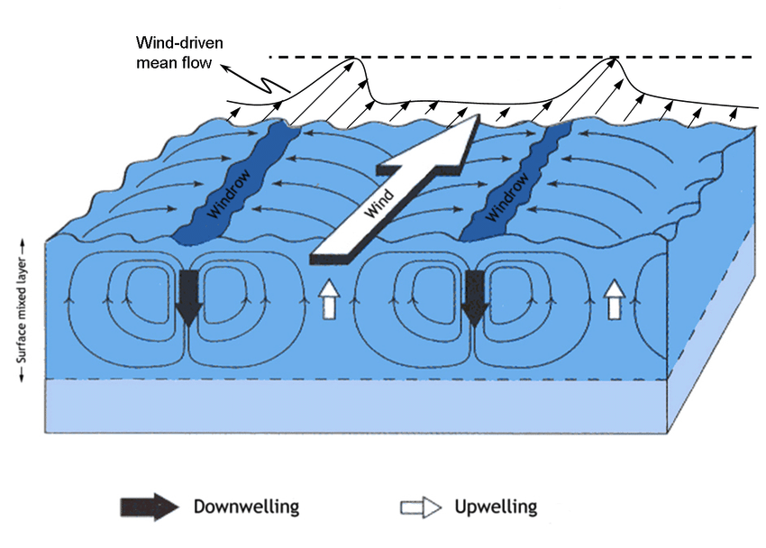
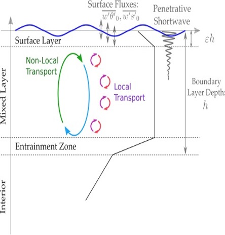
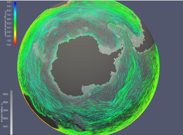
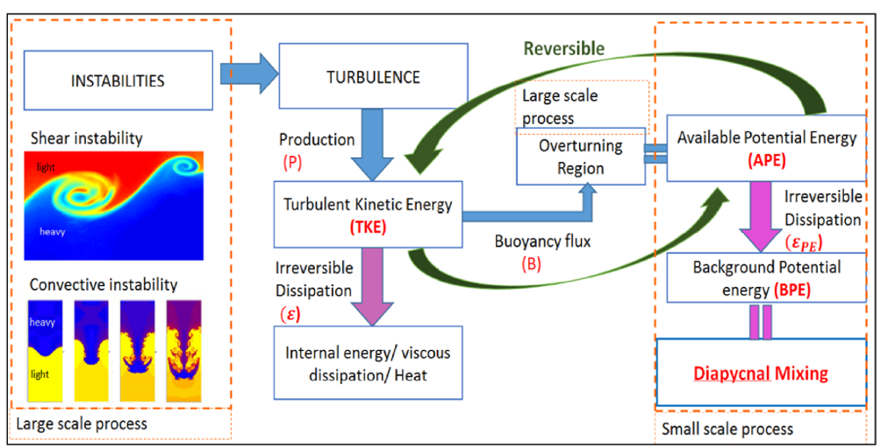
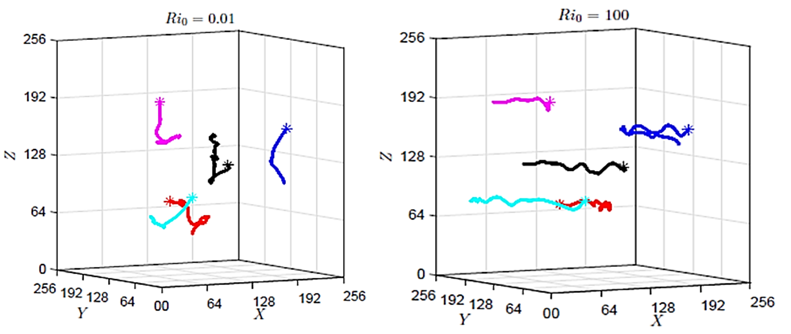
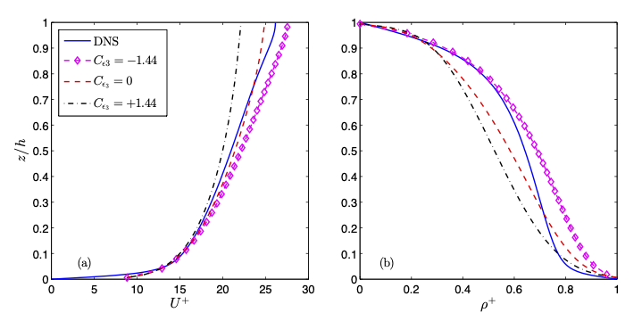
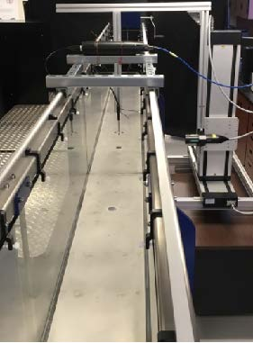

My Research
Langmuir turbulence:
This study proposes a new paramaterization for Langmuir turbulence that is an extension of ADC scheme for convective and wind-driven mixing, where flow is separated into downwelling and upwelling regions with distinct properties. The paramaeterization is compared against a suite of large eddy simulations (LES) simulated using Oceananigans.jl. Read more...
New OSBL mixing scheme (ADC):
Here, we develop a new physically-motivated mixing scheme for OSBL turbulence that is inspired from atmospheric boundary layer parameterizations. Results show that the proposed mixing scheme can simulate the physics of OSBL convective turbulence efficiently suggesting its potential use in GCMs to help reduce model biases in large-scale climate system. Read more...
LIGHT on EARTH (mesoscale/isopycnal mixing):
In this study, the Energy Exascale Earth System Model (E3SM) is used in conjunction with Lagrangian in Situ Global High-Performance Particle Tracking (LIGHT) module for analyzing turbulence statistics in high-resolution ocean models. The focus of the work is to develop better parameterization of isopycnal diffusivity using LIGHT data in E3SM simulations and evaluate an improved nonlinear closure model. Read more...
DNS of stratified turbulence:

Direct Numerical simulation (DNS) provides full description of turbulent flow field ranging from energy containing large eddy scale to small dissipative Kolmogorov scale without involving any parameterization of small-scale physics. This study performs DNS of stably stratified decaying turbulence to better understand flow dynamics and mixing in stably stratified turbulent flows. Read more...
Diapycnal mixing and improved parameterizations:
In this study improved parameterizations of diapycnal mixing is proposed with scaling arguments and validated with Direct numerical simulations with implications of practical applications. Read more...
Lagrangian (particles) dispersion and mixing:
Lagrangian statistics provide an in-depth understanding of particle dispersion in a fluid in motion. A particle dispersion study therefore provides fundamental insights on turbulent diffusion and ultimately turbulent mixing in stably stratified turbulent flows. In this study we have used a Lagrangian framework in DNS to study diapycnal mixing by identifying the true diapycnal length scale and velocity scale. Read more...
RANS and turbulence closure schemes:
This study investigates the effects of buoyancy forces in the standard RANS turbulence-closure scheme for modeling stably stratified wall-bounded turbulent flows. Numerical simulations are implemented in General Ocean Turbulence Model (GOTM) and the results are compared with direct numerical simulation (DNS) data of stably stratified channel flow. Read more...

Experimental Fluid Mechanics: LDA and ADV:
This work involves study of turbulent open-channel flows using Acoustic Doppler Velocimetry (ADV) and Laser Doppler Anemometry (LDA). The experiments are conducted in a recirculationg flume at Colorado State University and interesting findings about sensor assessment are presented with implications for practical applications. Read more...